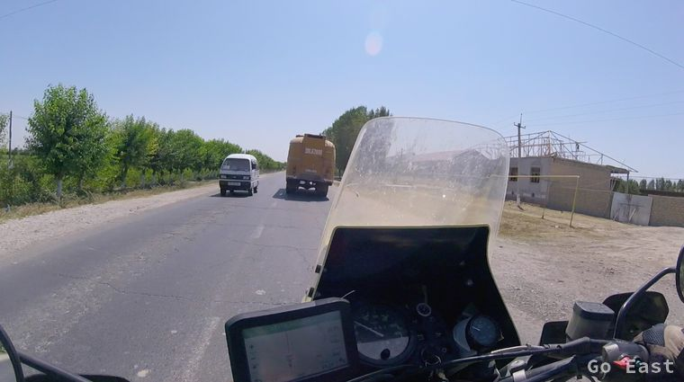
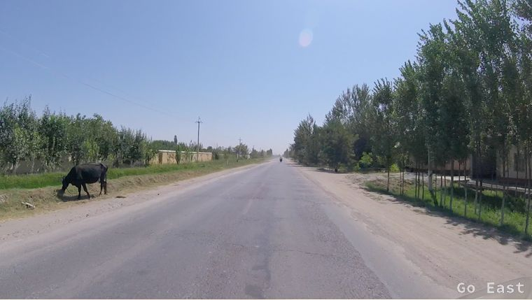
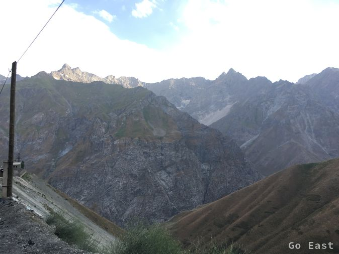

We have an extensive breakfast and pack and before we start, we can still pose for photos!.


My navi temporarily has a fault and displays only as the crow flies and does not project the route onto the road. We lose each other and meet again. We convert the last Uzbek money into fuel and set off for the border to Tajikistan. The departure is fast and very friendly. The entry into Tajikistan is even faster. The registration of the vehicles is 2x10, - USD. This sum disappears in the breast pocket of the official.
The roads are excellent. We have not been seeing mountains on the horizon or clouds for days, but now we do. Hard to believe!.




We take a break and eat a bite in a road side stand. Interesting that the restaurant has little private rooms with curtains. It also serves alcohol. Apparently, vodka is a trendy drink anytime of the day. A police officer in uniform enters the restaurant, drinks half a glass of vodka and leaves. It is 3:30 pm.: other countries other manners.

The street scene has changed again. Strikingly many Mercedes cars, Sprinter and Mercedes trucks of newer year of manufacture, then Opel and Toyota and of course Russian Lada and older trucks.


We stop at mountain springs, which are used to cool the drinks. The food stand there offered snacks and dried fruit. Of course you can also talk about football here excellently, even if you do not speak the language. Calling names and making appropriate expressions and gestures is enough.

It gets mountainous and we climb to over 2.600m high, past countless trucks. The smokiest are the Russian Kamaz. It seems as if they burn waste oil or potato chip fat. The pass consists of a 5km long, barely lit and unventilated tunnel. The temperature goes down to 20 degrees. They are perceived as really cool, if you constantly drive in conditions heated to 35+ degrees. Here I would not want to break down. I do not want to even think about the bycyclists behind us. We soon need fresh air for a few minutes to carry on. We see snow on the mountain peaks.




It goes downhill, people wave to us and many women sit on the wayside and sell fruit. 80km before Dushanbe we crack our 10,000km mark.


We head for the City Hostel in Dushanbe, which we finally find! One can obtain up-to-date information about the current route here. This seems to be a better place to recieve information than a star hotel would. The room we received is spartan and does not really make me happy, especially since there is only a shared bathroom. Also air conditioning is not available.
A short while later, a group of cars arrive at the Mongol-Rally, with international participants from Sweden, England, Germany and New Zealand. Consistently young people in mixed teams. There are very interesting discussions. We conclude the evening in a nearby restaurant with very good Tajik draft beer and shashlik.

City Hostel in Dushanbe

City Hostel in Dushanbe